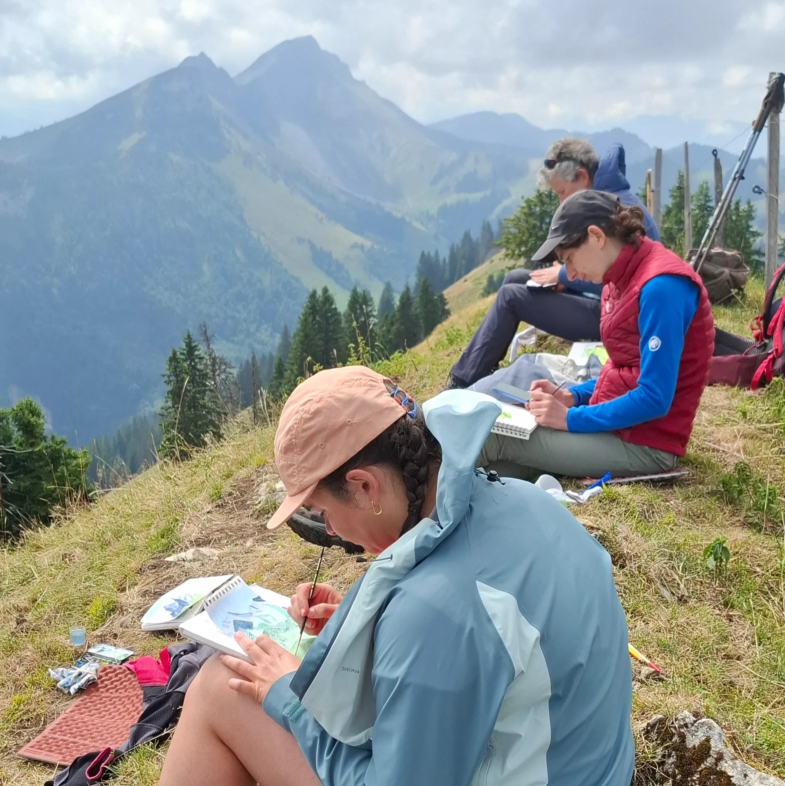
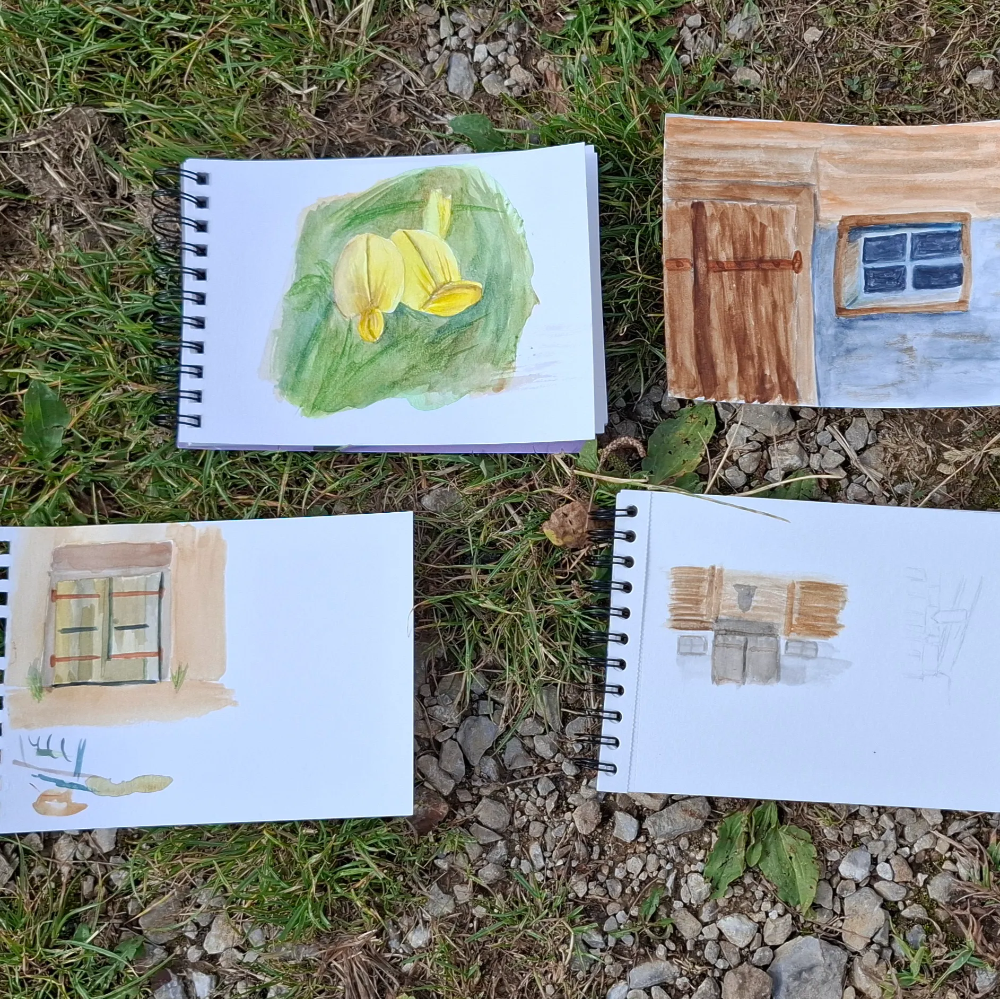
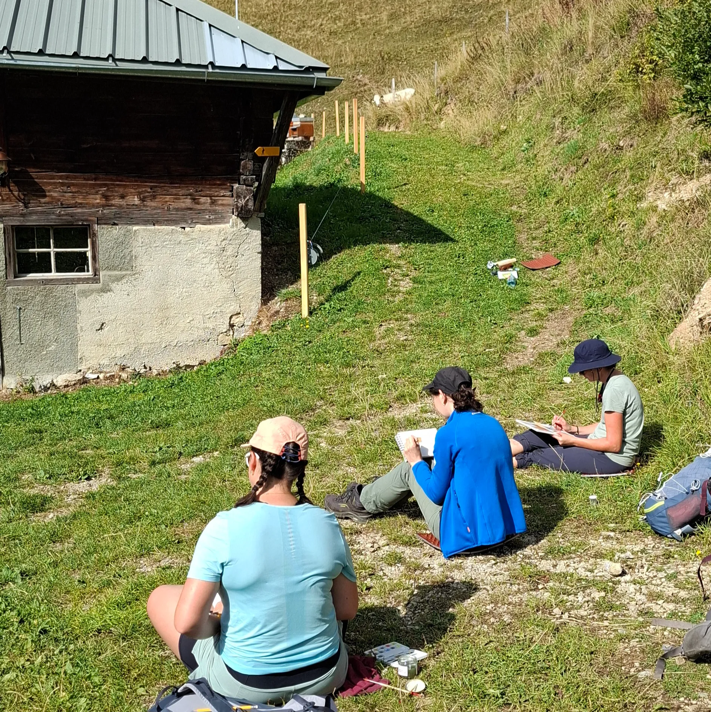
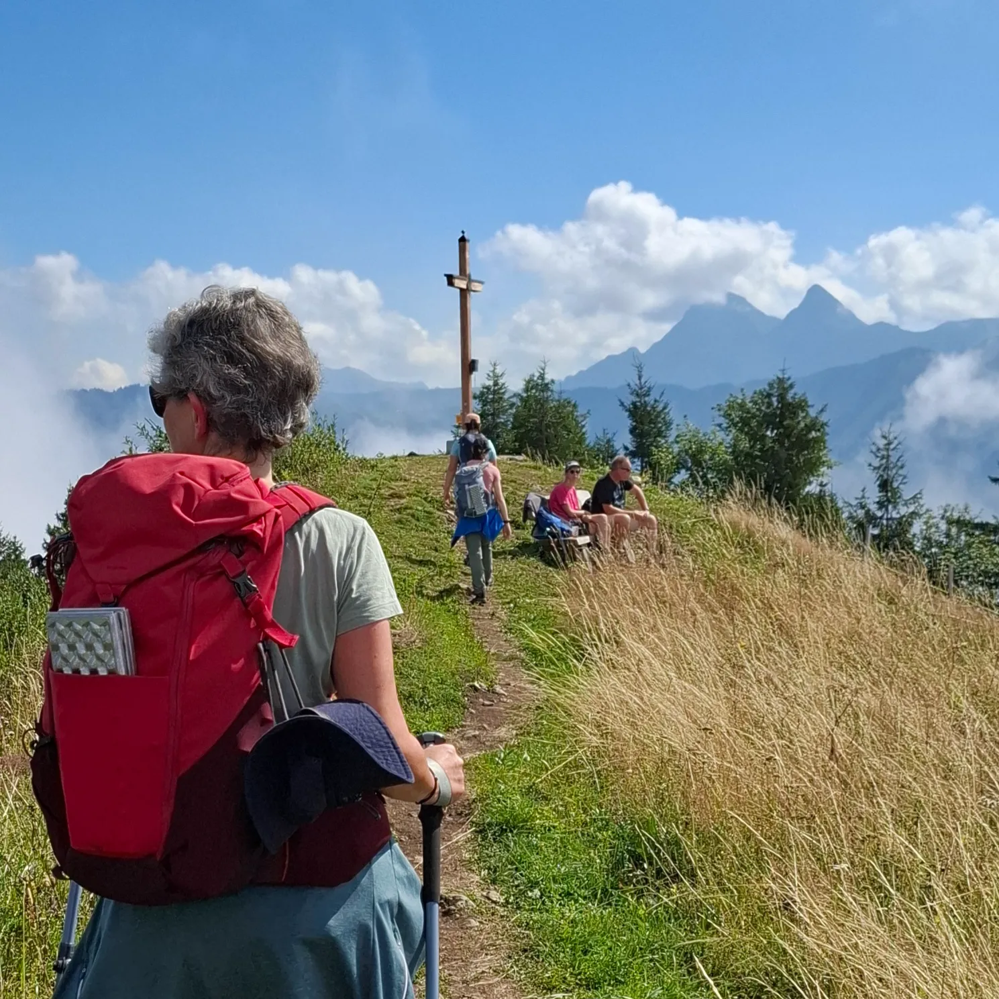
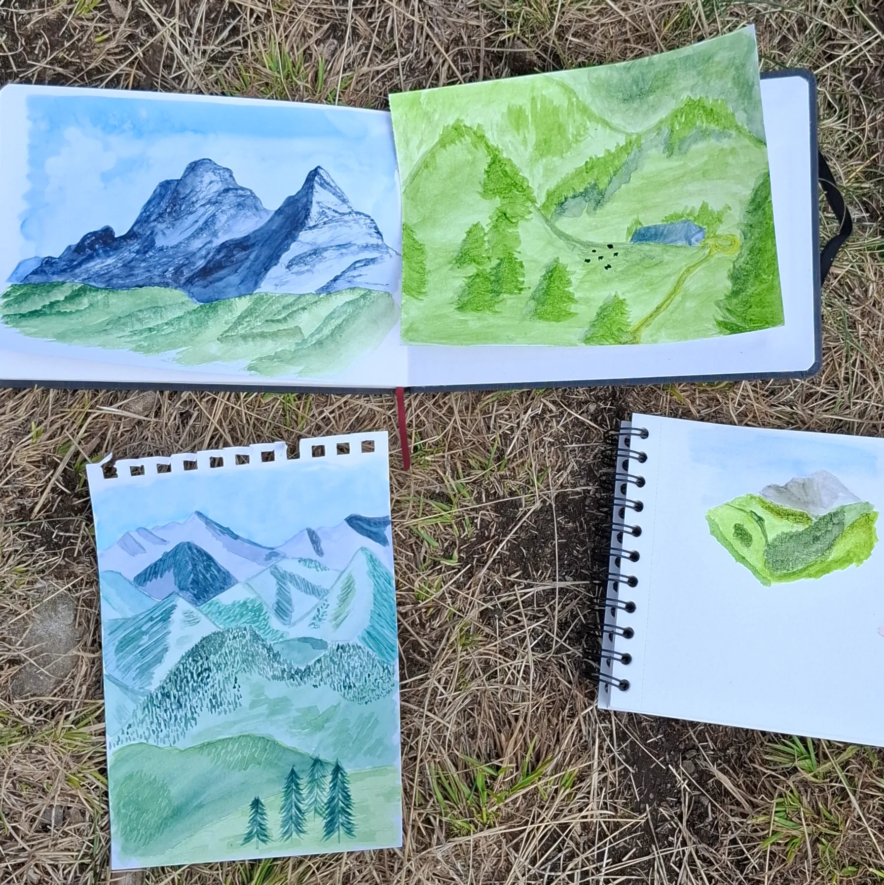
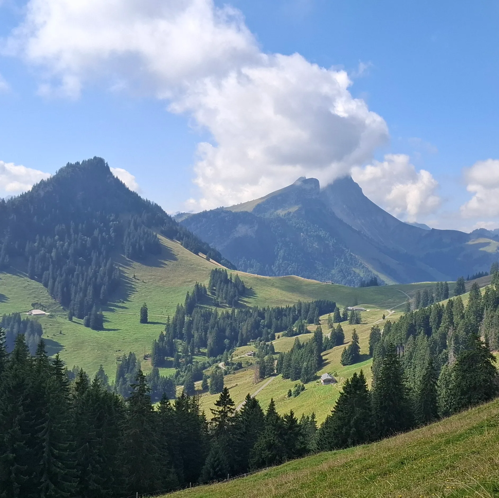

Entre prairies fleuries 🌼, alpages et jeux d'ombres, cette randonnée était une véritable immersion sensorielle. Sous un fond sonore de cloches de vaches 🐮, les participantes ont commencé à prendre en main l’aquarelle avec un premier dessin d’un détail du paysage. A la suite de cette pause, nous avons poursuivi la montée à la Vudalla pour y admirer la vue et y manger le pique-nique.
Le cor des Alpes et les nuages 🌬️ se sont invités pour la seconde œuvre de la journée. De quoi faire appel à l’imagination des participantes lorsque le brouillard dissimule les montagnes. Le sourire aux lèvres, nous avons clôturé l’activité par une halte à la buvette de la Challa avant de rentrer. 🍰





